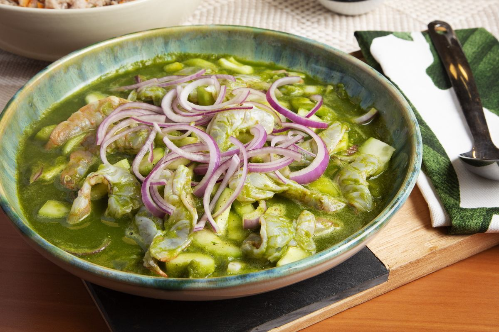

AguaChile
Ingredientes:
500 gramos de camarón crudo, pelado y desvenado
1/2 cebolla morada grande, finamente rebanada
2-4 chiles serranos (o al gusto), sin semillas y finamente rebanados (puedes usar jalapeños para menos picante)
El jugo de 8-10 limones verdes frescos
1/4 taza de cilantro fresco picado
Sal al gusto
Tostadas de maíz para acompañar
Preparación:
Prepare el camarón: Corta los camarones por la mitad a lo largo, sin separarlos completamente, de manera que queden abiertos como mariposas. Esto ayudará a que se "cocinen" más rápido con el limón y absorban mejor los sabores.
Marina el camarón: Coloque los camarones en un recipiente de vidrio o cerámica (evita el metal). Vierta el jugo de limón fresco sobre los camarones hasta que queden completamente cubiertos. Agrega sal al gusto.
Deja marinar: Refrigera el recipiente y deja marinar los camarones en el jugo de limón durante al menos 15-20 minutos, o hasta que cambien de color a un tono rosado opaco y estén firmes. El jugo de limón "cocinará" el camarón por la acidez.
Agrega los ingredientes: Una vez que el camarón esté marinado, agrega al tazón la cebolla morada en rebanadas y los chiles serranos (o jalapeños) rebanados. Mezcla suavemente.
Incorpora el cilantro: Justo antes de servir, agrega el cilantro picado y mezcla nuevamente.
Sirve: Sirve el aguachile inmediatamente en platos o copas. Acompaña con tostadas de maíz para disfrutar.
